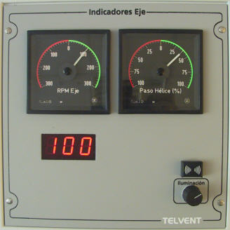

Indicadores de RPM y Paso de Hélice
El módulo de Indicadores de RPM y Paso de Hélice muestra continuamente al operador los valores de RPM y Paso de Hélice del motor.

Contiene los siguientes elementos:
- Indicador analógico de RPM: es un indicador analógico con iluminación regulable, centrado en cero y escala de –400 a +400. La zona de RPM positivas lleva fondo verde y la de RPM negativas fondo rojo.
- Indicador digital de RPM: es un indicador digital de tres cifras en el que se muestra el valor de revoluciones por minuto.
- Indicador analógico de Paso de Hélice: es un indicador analógico con iluminación regulable, centrado en cero y escala de –100 a +100. La zona de paso de hélice positivo lleva fondo verde y la de negativo fondo rojo. El valor de paso de hélice se expresa en tanto por ciento.
- Regulador de Iluminación: permite ajustar la intensidad de luz de todos los pilotos, pulsadores e indicadores de esta consola mediante un regulador giratorio.
- Alarma Sonora: zumbador para la alarma acústica de avería en cualquiera de los equipos simulados en esta consola.